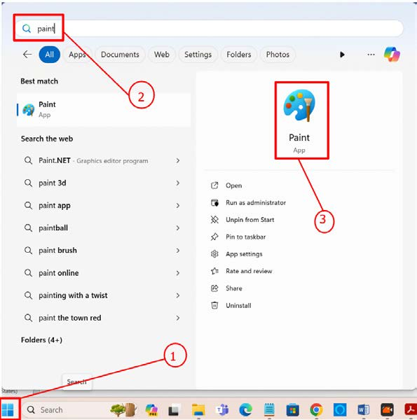

Drawing and arranging shapes logically
There are various computer programs used for drawing shapes. In this section, you will use a program called Paint to draw different shapes and arrange them logically.
Opening the paint program
The steps to open the Paint program using Windows 11 are as shown in Figure 3. The location of the search bar may differ slightly in other versions of Windows.
Steps
1.
Click on the ‘Windows Start button’.
2.
Type ‘Paint’ in the search bar.
3.
Click on ‘Paint’.
